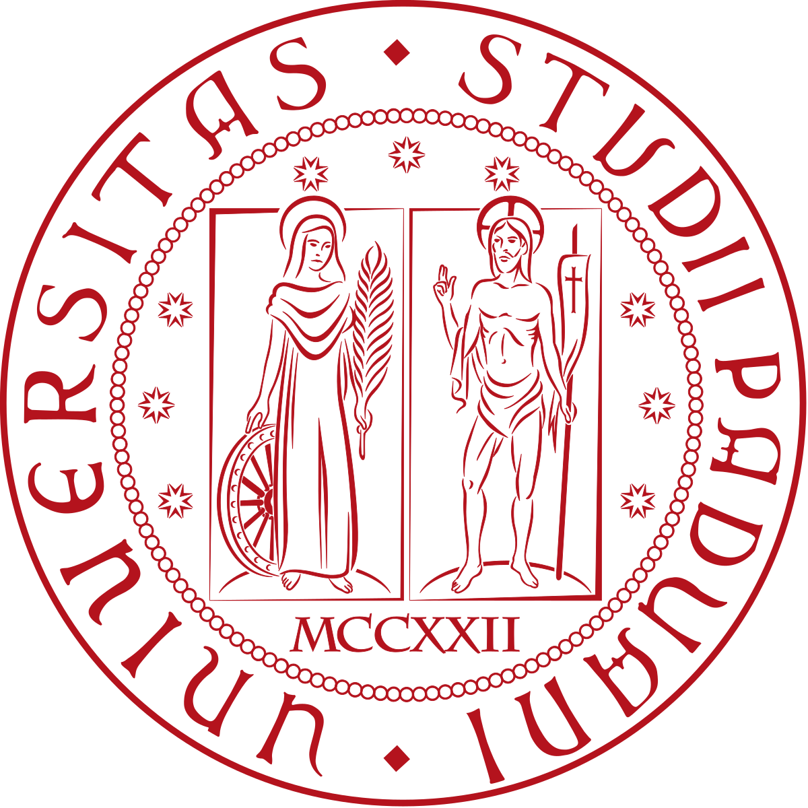

CURRICULUM VITAE
For the extended CV click here:VISITING
-
 Mar-Apr 2025
Mar-Apr 2025
H. Milton Stewart School of Industrial and Systems Engineering
Georgia Institute of Technology, Atlanta, GA, USA -
Feb-Sep 2019
School of Mathematics
University of Bristol, Bristol, UK -

Sep 2017-Jul 2018
Department of Statistics
University of Padova, Padova, Italy -
Sep-Oct 2013
Department of Civil and Mechanical Engineering
Technical University of Denmark (DTU), Lyngby, Denmark
EXPERIENCE
-
 Assistant Professor (non-tenure-track), in Italian: Ricercatore a Tempo Determinato di tipo A (RTDa)
Assistant Professor (non-tenure-track), in Italian: Ricercatore a Tempo Determinato di tipo A (RTDa)
Dec 2021-Today
Department of Industrial Engineering
University of Naples Federico II -
Postdoctoral Researcher, in Italian: Assegnista di Ricerca
Nov 2020-Nov 2021
Department of Industrial Engineering
University of Naples Federico II -
Postgraduate Researcher, in Italian: Borsista di Ricerca
May 2020-Sep 2020
Department of Industrial Engineering
University of Naples Federico II
EDUCATION
-
PhD in Industrial Engineering (Doctor Europaeus)
Feb 2017-Apr 2020
University of Naples Federico II
Final evaluation: Excellent cum laude -
MSc in Engineering Management
Oct 2016
University of Naples Federico II
Final evaluation: 110/110 cum laude -
BSc in Engineering Management for Logistics and Production
Mar 2013
University of Naples Federico II
Final evaluation: 107/110